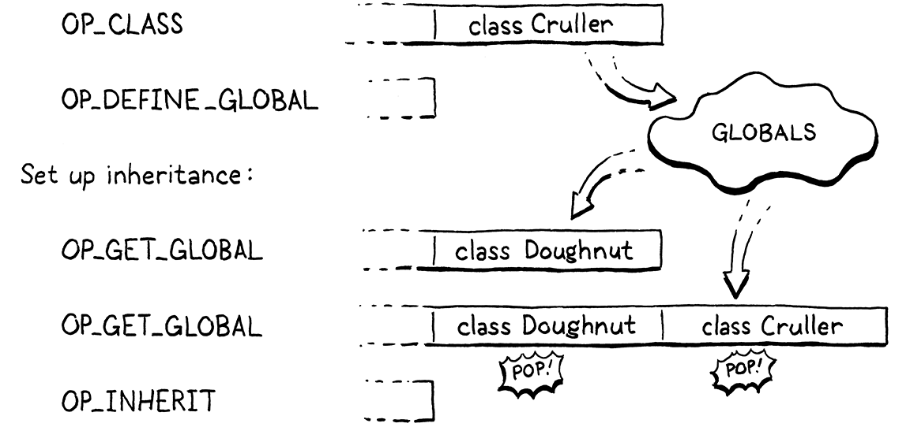
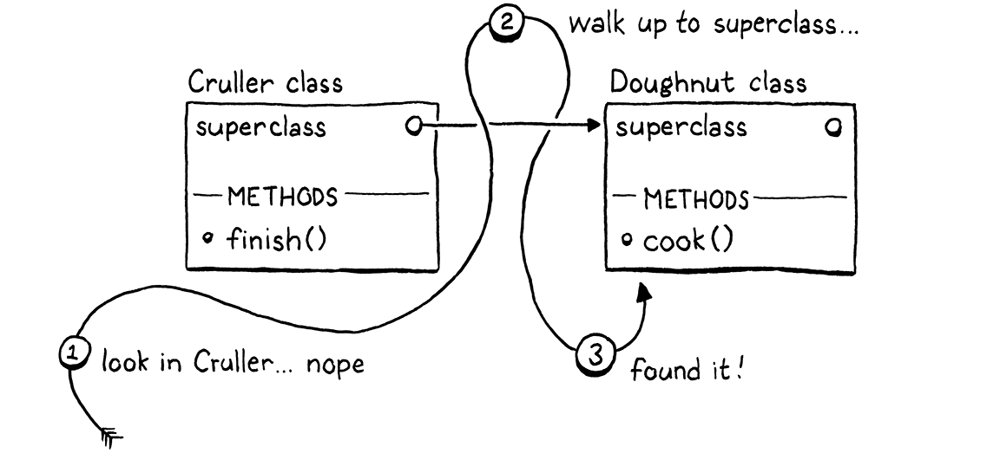
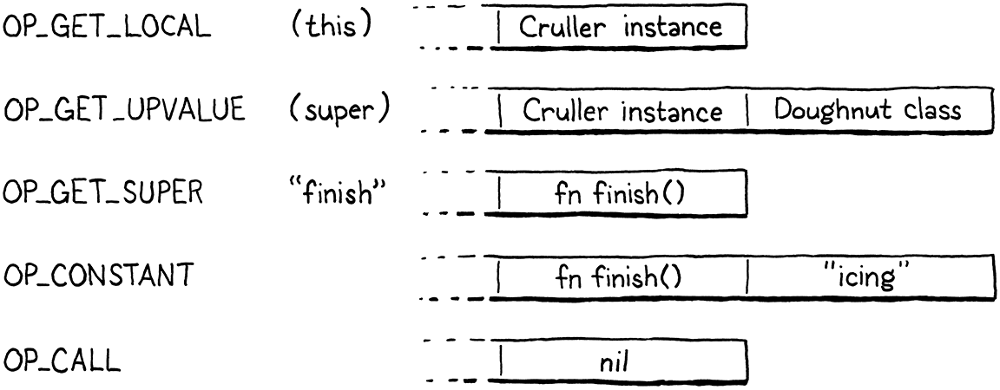
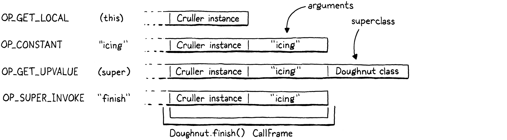

超类
你可以选择朋友，可你选不了家人；不管你认不认，他们终究是你的亲人，而你若不认，就会显得 傻透了。
哈珀·李，《杀死一只知更鸟》
这是我们给虚拟机添加新功能的最后一章。Lox 这门语言几乎已经整个塞进它里面了。剩下的只有 继承方法、调用超类方法。这章之后我们还有一章，但它不引入任何新行为，它 只是把已有的东西变快。读到这一章末尾，你就有了一个完整的 Lox 实现。
本章有些材料会让你想起 jlox。我们解析 super 调用的方式基本一样，只不过是通过 clox 那套更 复杂的状态存储机制来看待它。但这一回，处理继承方法调用我们用的是一套完全不同的、快得多的 办法。
29 . 1继承方法
我们先用方法继承热热身，因为它是比较简单的那一半。提醒一下自己，Lox 的继承语法长这样：
class Doughnut { cook() { print "Dunk in the fryer."; } } class Cruller < Doughnut { finish() { print "Glaze with icing."; } }
这里，Cruller 类继承自 Doughnut，因此 Cruller 的实例继承了 cook() 方法。我不知道自己干吗
要把这事讲得这么啰嗦。你知道继承是怎么工作的。我们来编译这段新语法。
currentClass = &classCompiler;
在 classDeclaration() 内
if (match(TOKEN_LESS)) { consume(TOKEN_IDENTIFIER, "Expect superclass name."); variable(false); namedVariable(className, false); emitByte(OP_INHERIT); }
namedVariable(className, false);
编译完类名之后，如果下一个词法单元是 <，我们就找到了一个超类子句。我们吃掉超类的标识符
词法单元，然后调用 variable()。那个函数拿先前消费掉的那个词法单元，把它当成一个变量引用，
并发射代码去加载这个变量的值。换句话说，它按名字查出超类并把它压栈。
之后，我们调用 namedVariable() 把正在做继承的那个子类加载到栈上，紧跟着一条 OP_INHERIT
指令。那条指令把超类和新的子类接起来。上一章里，我们定义了 OP_METHOD 指令去修改一个已有的
类对象、往它的方法表里加一个方法。这条指令类似——OP_INHERIT 指令拿一个已有的类，让
它继承超类。
在上一个例子里，当编译器处理到这段语法时：
class Cruller < Doughnut {
生成的字节码是这样的：

在实现新的 OP_INHERIT 指令之前，我们还有一个边界情况要检测。
variable(false);
在 classDeclaration() 内
if (identifiersEqual(&className, &parser.previous)) {
error("A class can't inherit from itself.");
}
namedVariable(className, false);
一个类不能做自己的超类。除非你能搞到一个疯了的核物理学家和一台被 重度改装过的德劳瑞安，否则你没法继承你自己。
29 . 1 . 1执行继承
现在来看这条新指令。
OP_CLASS,
在枚举 OpCode 内
OP_INHERIT,
OP_METHOD
没有操作数需要操心。我们需要的两个值——超类和子类——都在栈上。这说明反汇编很简单。
return constantInstruction("OP_CLASS", chunk, offset);
在 disassembleInstruction() 内
case OP_INHERIT: return simpleInstruction("OP_INHERIT", offset);
case OP_METHOD:
好戏在解释器这边。
break;
在 run() 内
case OP_INHERIT: { Value superclass = peek(1); ObjClass* subclass = AS_CLASS(peek(0)); tableAddAll(&AS_CLASS(superclass)->methods, &subclass->methods); pop(); // 子类。 break; }
case OP_METHOD:
从栈顶往下走，先是子类，然后是超类。我们把这两个都取出来，然后干继承那点活儿。clox 就是在这里 走上了跟 jlox 不同的路。在我们的第一个解释器里，每个子类都存着一个指向它超类的引用。方法 访问时，如果我们在子类的方法表里没找到方法，就沿着继承链递归下去，逐个查看每个祖先的方法表， 直到找到为止。
比如说，在一个 Cruller 实例上调用 cook()，会让 jlox 走上这么一段旅程：

要在方法调用的时候干这么多活儿，很慢。更糟的是，一个继承来的方法在祖先链上位置越高， 它就越慢。性能表现并不理想。
新办法快得多。子类声明的时候，我们把被继承那个类的所有方法全都复制进子类自己的方法表。 之后，调用方法时，任何从超类继承来的方法都会直接在子类自己的方法表里被找到。继承根本 不需要任何额外的运行时开销。到类声明完成的时候，活儿就干完了。这意味着继承来的方法调用跟 普通方法调用一样快——就一次哈希表查找。
我偶尔听人把这套技术叫作「复制下沉继承」。它简单又快，但和大多数优化一样，你只能在特定约束 下用它。它在 Lox 里行得通，是因为 Lox 的类是封闭的。一个类声明一旦执行完毕，这个类的方法 集合就永远不会再变。
在 Ruby、Python 和 JavaScript 这样的语言里，你可以把一个已有的类撬开， 往里头塞些新方法，甚至把方法删掉。那会毁掉我们的优化，因为如果那些修改恰好发生在子类声明 执行之后、作用在超类身上，子类就接收不到这些改动。这会破坏用户的预期——继承总是要反映 超类的当前状态。
对我们来说这是幸运（不过对喜欢这个特性的用户来说恐怕不是），Lox 不让你改猴子，也不让你捶鸭子， 所以我们可以放心地应用这项优化。
那方法覆盖呢？把超类的方法复制进子类的方法表，会不会跟子类自己的方法撞车？幸好不会。我们在
在创建子类的 OP_CLASS 指令之后、任何方法声明和 OP_METHOD 指令被编译之前，发射
OP_INHERIT。在我们把超类的方法复制下去的那一刻，子类的方法表是空的。子类覆盖的任何方法
都会盖掉表里那些继承来的条目。
29 . 1 . 2无效的超类
我们的实现又简单又快，这正合我对虚拟机代码的口味。但它不健壮。没有任何东西能阻止用户从一个 根本不是类的对象继承：
var NotClass = "So not a class"; class OhNo < NotClass {}
显然，有自尊的程序员不会写这种代码，但我们得防着那些没自尊的潜在 Lox 用户。一个简单的 运行时检查就解决了。
Value superclass = peek(1);
在 run() 内
if (!IS_CLASS(superclass)) { runtimeError("Superclass must be a class."); return INTERPRET_RUNTIME_ERROR; }
ObjClass* subclass = AS_CLASS(peek(0));
如果从超类子句里那个标识符加载出来的值不是 ObjClass，我们就报一个运行时错误，让用户知道我们 怎么看他和他的代码。
29 . 2存放超类
你注意到了吗？加上方法继承的时候，我们其实并没有从子类往超类加任何引用。复制完继承来的方法 之后，我们就把超类彻底忘了。我们不需要握着超类的句柄，所以就不握。
但这还不够支撑 super 调用。由于子类可能覆盖了超类的方法，我们需要 能够拿到超类的方法表。在讲那套机制之前，我想先帮你回忆一下 super 调用是怎么做静态解析的。
在 jlox 的太平盛世里，我给你看过这个棘手的例子，用来解释 super 调用是怎么分派的：
class A { method() { print "A method"; } } class B < A { method() { print "B method"; } test() { super.method(); } } class C < B {} C().test();
在 test() 方法体内部，this 是一个 C 的实例。如果 super 调用是相对于接收者的超类来
解析的，那我们就会去查 C 的超类 B。但 super 调用是相对于调用发生处那个外层类的超类来
解析的。在这个例子里，我们身处 B 的 test() 方法，所以超类是 A，程序应该打印 “A method”。
这意味着 super 调用不是根据运行时实例动态解析的。用来查找方法的超类是一个静态的——几乎是 词法的——性质，由调用发生的位置决定。当我们给 jlox 加上继承时，我们利用了它静态的这一面：把 超类存进我们用于所有词法作用域的那个 Environment 结构体里。解释器看上面那段程序，几乎就像 这样：
class A { method() { print "A method"; } } var Bs_super = A; class B < A { method() { print "B method"; } test() { runtimeSuperCall(Bs_super, "method"); } } var Cs_super = B; class C < B {} C().test();
每个子类都有一个隐藏变量，存着一个指向它超类的引用。每当我们需要执行一次 super 调用，就从 那个变量里取出超类，然后告诉运行时从那儿开始找方法。
clox 我们走同样的路。区别在于，jlox 用的是堆上分配的 Environment 类，而我们用的是字节码 虚拟机的值栈加上 upvalue 系统。机制稍有不同，但整体效果一样。
29 . 2 . 1一个超类局部变量
我们的编译器已经发射代码把超类加载到栈上了。与其让那个槽位当临时值用，我们新建一个作用域， 把它变成一个局部变量。
}
在 classDeclaration() 内
beginScope(); addLocal(syntheticToken("super")); defineVariable(0);
namedVariable(className, false);
emitByte(OP_INHERIT);
新建一个词法作用域保证了：如果我们在同一个作用域里声明两个类，它们各自有一个不同的局部 槽位来存自己的超类。因为我们总是把这个变量命名为 “super”，如果不给每个子类都开一个作用域， 这些变量就会撞车。
我们把这个变量命名为 “super”，理由和我们把 this 表达式解析到的那个隐藏局部变量命名为
“this” 完全一样：“super” 是保留字，这保证了编译器的隐藏变量不会跟用户定义的变量撞车。
区别在于：编译 this 表达式时，我们手边正好有一个词素为 “this” 的词法单元。这里我们没这么
走运。我们改为加一个小的辅助函数，为给定的常量字符串造一个
合成的词法单元。
加在 variable() 之后
static Token syntheticToken(const char* text) { Token token; token.start = text; token.length = (int)strlen(text); return token; }
既然我们为超类变量开了一个局部作用域，就得把它关掉。
emitByte(OP_POP);
在 classDeclaration() 内
if (classCompiler.hasSuperclass) { endScope(); }
currentClass = currentClass->enclosing;
编译完类体和它的方法之后，我们弹出这个作用域，把 “super” 变量丢弃掉。这样一来，这个变量在 子类的所有方法里都能访问到。这个优化其实没太大必要，不过我们只在确实有超类子句时 才建这个作用域。所以也只有在有超类子句时才需要关掉它。
要记住这一点，我们本可以在 classDeclaration() 里声明一个小的局部变量。但很快，编译器里的
其他函数也需要知道外层那个类是不是子类。所以不妨顺手给未来的自己帮个忙，现在就把这个事实
存成 ClassCompiler 里的一个字段。
typedef struct ClassCompiler {
struct ClassCompiler* enclosing;
在结构体 ClassCompiler 内
bool hasSuperclass;
} ClassCompiler;
我们第一次初始化一个 ClassCompiler 时，假定它不是子类。
ClassCompiler classCompiler;
在 classDeclaration() 内
classCompiler.hasSuperclass = false;
classCompiler.enclosing = currentClass;
然后，如果看到超类子句，我们就知道自己在编译一个子类。
emitByte(OP_INHERIT);
在 classDeclaration() 内
classCompiler.hasSuperclass = true;
}
这套机制给了我们一个运行时手段：可以在子类的任何一个方法内部访问外层子类的超类对象——只要 发射代码加载那个叫 “super” 的变量就行。那个变量是方法体外面的一个局部变量，但我们已有 的 upvalue 支持让虚拟机能在方法体内部、甚至在嵌套于该方法的函数里捕获这个局部变量。
29 . 3Super 调用
运行时支持到位了，我们准备实现 super 调用。和平常一样，我们从前到后，先从新语法开始。super
调用自然是以 super 关键字开始的。
[TOKEN_RETURN] = {NULL, NULL, PREC_NONE},
替换 1 行
[TOKEN_SUPER] = {super_, NULL, PREC_NONE},
[TOKEN_THIS] = {this_, NULL, PREC_NONE},
表达式解析器落到一个 super 词法单元上时，控制权跳到一个新的解析函数，它开头是这样的：
加在 syntheticToken() 之后
static void super_(bool canAssign) { consume(TOKEN_DOT, "Expect '.' after 'super'."); consume(TOKEN_IDENTIFIER, "Expect superclass method name."); uint8_t name = identifierConstant(&parser.previous); }
这跟我们编译 this 表达式的方式相当不同。与 this 不同，super 的词法
单元不是一个独立的表达式。相反，紧跟其后的点号和方法名本身就是语法的一部分。不过，
那个带括号的实参列表是分开的。和普通的方法访问一样，Lox 允许你取到超类方法的一个引用、把它
当成闭包，而不调用它：
class A { method() { print "A"; } } class B < A { method() { var closure = super.method; closure(); // Prints "A". } }
换句话说，Lox 其实没有 super 调用表达式，它有的是 super 访问表达式，你可以选择要不要
立刻调用它。所以当编译器遇到一个 super 词法单元时，我们消费掉后面那个 . 词法单元，然后
去找方法名。方法是动态查找的，所以我们用 identifierConstant() 取方法名词法单元的词素，像处理
属性访问表达式那样把它存进常量表。
编译器消费掉那些词法单元之后做的事是这样的：
uint8_t name = identifierConstant(&parser.previous);
在 super_() 内
namedVariable(syntheticToken("this"), false); namedVariable(syntheticToken("super"), false); emitBytes(OP_GET_SUPER, name);
}
为了在当前实例上访问一个超类方法，运行时需要两样东西：接收者和外层方法所属类的
超类。第一次 namedVariable() 调用生成代码，去查找存在隐藏变量 “this” 里的当前接收者并压栈。
第二次 namedVariable() 调用发射代码，去从它的 “super” 变量里查出超类并压在接收者上面。
最后，我们发射一条新的 OP_GET_SUPER 指令，操作数是方法名在常量表里的索引。要在脑子里同时
装这么多东西可真够呛。来看这个例子程序，让它具体一点：
class Doughnut { cook() { print "Dunk in the fryer."; this.finish("sprinkles"); } finish(ingredient) { print "Finish with " + ingredient; } } class Cruller < Doughnut { finish(ingredient) { // 不要糖粒，只要糖霜。 super.finish("icing"); } }
为 super.finish("icing") 这个表达式生成的字节码，长这样、也这样工作：

前三条指令让运行时拿到做 super 访问所需的三份信息：
-
第一条指令把实例加载到栈上。
-
第二条指令加载方法解析时所依据的那个超类。
-
然后新的
OP_GET_SUPER指令把要访问的方法名编码成操作数。
剩下的指令就是求值一个实参列表并调用函数的常规字节码。
我们差不多准备好在解释器里实现新的 OP_GET_SUPER 指令了。但在那之前，编译器有些错误是它
该负责报的。
static void super_(bool canAssign) {
在 super_() 内
if (currentClass == NULL) { error("Can't use 'super' outside of a class."); } else if (!currentClass->hasSuperclass) { error("Can't use 'super' in a class with no superclass."); }
consume(TOKEN_DOT, "Expect '.' after 'super'.");
super 调用只有在一个方法体内部（或者嵌套在方法内部的函数里）才有意义，而且只有在一个「有超类
的类」的方法内部才有意义。这两种情况我们都用 currentClass 的值来检测。如果它是 NULL，
或者指向一个没有超类的类，我们就报这些错误。
29 . 3 . 1执行 super 访问
假设用户没有把 super 表达式放在不被允许的位置，他的代码就从编译器交到了运行时手里。我们有
了一条新指令。
OP_SET_PROPERTY,
在枚举 OpCode 内
OP_GET_SUPER,
OP_EQUAL,
我们像处理其他以常量表索引为操作数的操作码那样给它写反汇编。
return constantInstruction("OP_SET_PROPERTY", chunk, offset);
在 disassembleInstruction() 内
case OP_GET_SUPER: return constantInstruction("OP_GET_SUPER", chunk, offset);
case OP_EQUAL:
你可能以为会难一些，但解释这条新指令跟执行一次普通的属性访问差不多。
}
在 run() 内
case OP_GET_SUPER: { ObjString* name = READ_STRING(); ObjClass* superclass = AS_CLASS(pop()); if (!bindMethod(superclass, name)) { return INTERPRET_RUNTIME_ERROR; } break; }
case OP_EQUAL: {
和属性一样，我们从常量表读出方法名。然后把它传给 bindMethod()，它在给定类的方法表里查出
这个方法，并创建一个 ObjBoundMethod，把查到的闭包和当前实例捆在一起。
关键的差别在于我们传给 bindMethod() 的是哪个类。普通的属性
访问里，我们用的是那个 ObjInstance 自己的类，这给了我们想要的多态分派。而 super 调用不用
实例的类，我们用的是包含它的那个类静态解析出来的超类——编译器已经很贴心地保证它正待在栈顶
上等着我们。
我们把那个超类弹出来传给 bindMethod()，它会正确地跳过超类和实例自己的类之间任何子类里的
覆盖方法。它也正确地包含了超类从它自己的那些超类继承来的任何方法。
剩下的行为就一样了。弹出超类之后，栈顶是那个实例。bindMethod() 成功时，它弹出实例、压入
新的绑定方法。否则它报一个运行时错误并返回 false。那种情况下，我们中止解释器。
29 . 3 . 2更快的 super 调用
现在 super 类方法访问已经能用了。而既然返回的对象是一个你随后可以调用的 ObjBoundMethod， super 调用也就跟着能用了。和上一章一样，我们到达了一个语义完整正确的点。
但也和上一章一样，它相当慢。又一次，我们为每次 super 调用在堆上分配一个 ObjBoundMethod，
尽管大多数时候紧跟着的下一条指令就是一条 OP_CALL，会立刻把这个绑定方法拆开、调用它、然后
扔掉。事实上，对 super 调用来说，这比普通方法调用还更可能成立。至少在方法调用那里，还有
一种可能是用户真的在调用一个存在字段里的函数。而 super 调用，你永远是在查一个方法。唯一的
问题只是你会不会立刻调用它。
编译器如果在超类方法名后面看到一个左括号，自然就能自己回答这个问题。所以我们照做方法调用时
那一套优化。把加载超类并发射 OP_GET_SUPER 的那两行代码拿掉，换成这个：
namedVariable(syntheticToken("this"), false);
在 super_() 内
替换 2 行
if (match(TOKEN_LEFT_PAREN)) { uint8_t argCount = argumentList(); namedVariable(syntheticToken("super"), false); emitBytes(OP_SUPER_INVOKE, name); emitByte(argCount); } else { namedVariable(syntheticToken("super"), false); emitBytes(OP_GET_SUPER, name); }
}
现在，在发射任何东西之前，我们先去找一个带括号的实参列表。找到了就编译它。然后加载超类。
之后发射一条新的 OP_SUPER_INVOKE 指令。这条超级指令把
OP_GET_SUPER 和 OP_CALL 的行为合在了一起，所以它带两个操作数：要查找的方法名在常量表里
的索引，以及要传给它的实参个数。
否则，如果我们没找到 (，我们就照之前那样继续把这个表达式编译成一次 super 访问，发射一条
OP_GET_SUPER。
顺着编译流水线往下漂，第一站是一条新指令。
OP_INVOKE,
在枚举 OpCode 内
OP_SUPER_INVOKE,
OP_CLOSURE,
再往下一点，是它的反汇编支持。
return invokeInstruction("OP_INVOKE", chunk, offset);
在 disassembleInstruction() 内
case OP_SUPER_INVOKE: return invokeInstruction("OP_SUPER_INVOKE", chunk, offset);
case OP_CLOSURE: {
一条 super 调用指令的操作数和 OP_INVOKE 完全一样，所以我们复用同一个辅助函数来反汇编它。
最后，流水线把我们直接倒进了解释器里。
break;
}
在 run() 内
case OP_SUPER_INVOKE: { ObjString* method = READ_STRING(); int argCount = READ_BYTE(); ObjClass* superclass = AS_CLASS(pop()); if (!invokeFromClass(superclass, method, argCount)) { return INTERPRET_RUNTIME_ERROR; } frame = &vm.frames[vm.frameCount - 1]; break; }
case OP_CLOSURE: {
就这么几行代码，基本上就是我们 OP_INVOKE 的实现，掺上一点 OP_GET_SUPER。不过栈的组织
方式还是有些差别。在未优化的 super 调用里，超类会在调用的实参求值之前被弹出、换成解析
出来的那个函数的 ObjBoundMethod。这保证了等到 OP_CALL 执行时，绑定方法位于实参列表下面，
正是运行时做闭包调用时期待的位置。
用上我们的优化指令，顺序就有点打乱了：

现在解析超类方法成了调用的一部分，所以在查方法的那一刻，实参必须已经在栈上了。这意味着 超类对象位于实参之上。
除此之外，行为大致等同于一条 OP_GET_SUPER 后跟一条 OP_CALL。首先，我们取出方法名和
实参个数这两个操作数。然后把超类从栈顶弹掉，好在它的方法表里查方法。这顺便让栈的状态正好
符合一次方法调用所需。
我们把超类、方法名和实参个数传给已有的 invokeFromClass() 函数。那个函数在给定类上查找
给定方法，并尝试以给定的参数个数发起一次调用。如果找不到方法，它返回 false，我们退出
解释器。否则，invokeFromClass() 会在调用栈上为方法的闭包压入一个新的调用帧。这会让解释器
缓存的调用帧指针失效，所以我们刷新 frame。
29 . 4一台完整的虚拟机
回头看看我们造出来的东西。按我的统计，我们写了大约 2,500 行相当干净、直截了当的 C。那个小 程序里装着 Lox 这门——相当高层的！——语言的完整实现，还有一整张塞满表达式类型的优先级表， 以及一整套控制流语句。我们实现了变量、函数、闭包、类、字段、方法和继承。
更了不起的是，我们的实现可以移植到任何有 C 编译器的平台上，而且快到足以应付真实世界的生产 用途。我们有一个单遍字节码编译器、一个针对自有指令集的紧凑虚拟机解释器、紧凑的对象表示、 一个不用堆分配就能存放变量的栈，以及一个精确式垃圾回收器。
如果你现在去翻 Lua、Python 或 Ruby 的实现，你会惊讶于其中有多少看着眼熟。你关于编程语言 工作原理的知识实实在在地升了一个级，而这又让你对编程本身有了更深的理解。就好像你以前是个 赛车手，而现在连引擎盖都能掀开、自己修引擎了。
你愿意的话可以到此为止。你手上的这两个 Lox 实现都是完整、功能齐全的。车你造好了，现在想 开去哪儿都行。但如果你还想在赛道上继续调校、继续拧，追求更好的性能，那就还有一章。我们不加 任何新能力，只是把几个经典优化滚进来，再从引擎里榨出更多性能。如果这听着有意思， 接着读……
习题
-
面向对象编程的一条信条是，类应该保证新对象处于一个有效状态。在 Lox 里，这意味着要定义 一个初始化器来填充实例的字段。继承让事情复杂化了，因为实例必须满足继承链上每一个类对有效状态的要求。
容易的部分是记得在每个子类的
init()方法里调用super.init()。难的部分是字段。继承链上 两个类不小心占用了同一个字段名，是没有任何东西能阻止的。这种情况发生时，它们会踩到对方的 字段，还可能给你留下一个坏掉的实例。如果 Lox 是你的语言，你会怎么处理这个问题——如果非处理不可的话？如果你要改这门语言，就 实现你的改动。
-
我们的复制下沉继承优化之所以成立，只是因为 Lox 不允许你在类声明之后修改它的方法。这意味 着我们不必担心子类里那些复制来的方法跟超类后来的改动失去同步。
其他语言，比如 Ruby，确实允许事后修改类。这类语言的实现是怎么在支持类修改的同时保持 方法查找效率的？
-
在jlox 讲继承那一章里，我出过一个实现 BETA 语言方法覆盖方式的题目。再做 一遍，但这次是在 clox 里。下面是上次那道题的描述：
在 Lox 里，和大多数别的面向对象语言一样，查找方法时我们从类层级的底部开始往上走——子类的 方法优先于超类的方法。为了在一个覆盖方法内部够到超类的方法，你用
super。语言 BETA采取的是相反的思路。你调用一个方法时，它从类层级的顶端开始 往下走。超类的方法赢过子类的方法。为了够到子类的方法，超类方法可以调用
inner，它 有点像super的反面。它沿着层级链往下接到下一个方法。是超类方法掌控着子类何时、在何处被允许细化自己的行为。如果超类方法压根不调用
inner， 那子类就根本没有办法覆盖或修改超类的行为。把 Lox 现有的覆盖和
super行为拿掉，换成 BETA 的语义。简而言之：-
在一个类上调用方法时，继承链上位置最高的方法优先。
-
在方法体内部，调用
inner会沿着inner所在类与this所在类之间的继承链，去 最近的子类里找一个同名方法。如果没有匹配的方法，这次inner调用什么都不做。
举个例子：
class Doughnut { cook() { print "Fry until golden brown."; inner(); print "Place in a nice box."; } } class BostonCream < Doughnut { cook() { print "Pipe full of custard and coat with chocolate."; } } BostonCream().cook();
它应该打印：
Fry until golden brown. Pipe full of custard and coat with chocolate. Place in a nice box.
既然 clox 讲究的不只是实现 Lox，还要实现得好、足够快，这一回请带着效率的意识去解这道题。
-